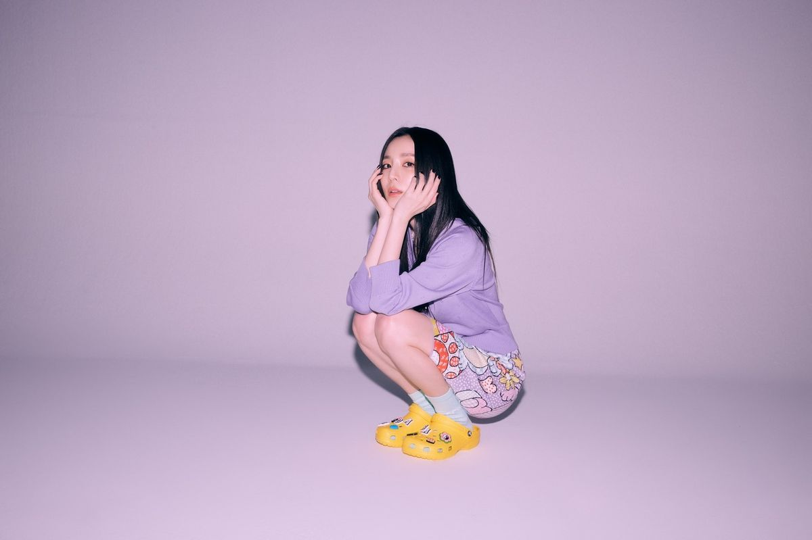
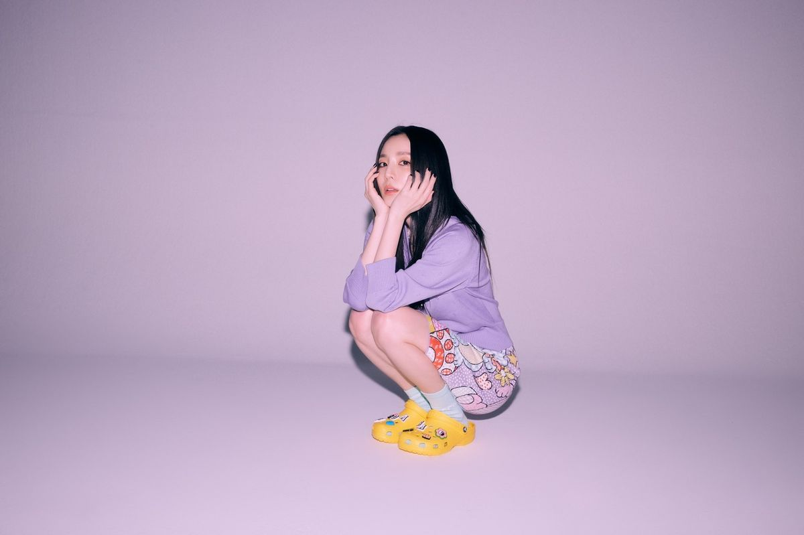
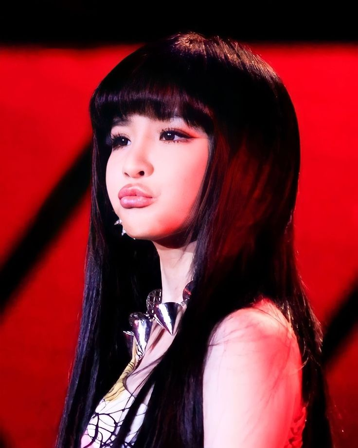
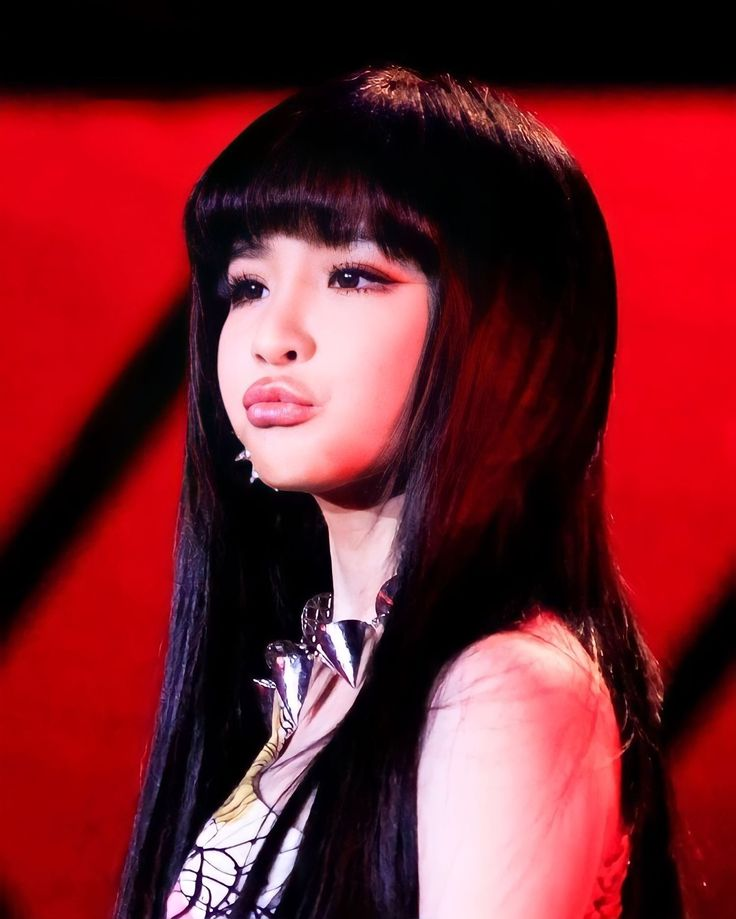

MEMBERS
In a world of perfection, they chose to be raw, powerful, and unapologetically bold. 2NE1 stood at the intersection of hip-hop and pop, carving out a space for a new era of female icons to thrive. Explore the lives and careers of the four pioneers who turned the stage into their kingdom.
DARA
Sandara Park
Birthday: Nov 12, 1984
Position: Vocalist, Visual
A multi-talented icon known for her "vampire" youthfulness and significant impact across the Korean and Philippine industries.
CL
Lee Chae-rin
Birthday: Feb 26, 1991
Position: Leader, Main Rapper
The "Baddest Female" and versatile leader known for her fierce stage presence and global influence in fashion and music.

BOM
Park Bom
Birthday: March 24, 1984
Position: Main Vocalist
Famous for her unique, powerhouse vocals and "doll-like" visuals, Bom is the emotional soul of 2NE1's discography.
MINZY
Gong Min-ji
Birthday: Jan 18, 1994
Position: Main Dancer, Vocalist
The legendary "Dancing Queen" who debuted at 15, bringing unmatched power and energy to 2NE1's performances.
 


 
